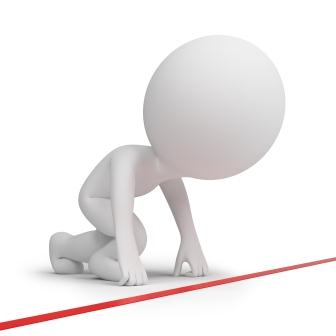

Arrangement
Oppstart trening Høsten 2017.

Vi starter opp sesongen Høsten 2017 for fult tirsdag 15. august.
Nytt av sesongen er at Tiger gruppen flyttes til onsdager og er fra klokken 18.15 - 19.15. Vi åpner også en ny time på onsdager fra 1930-2100 med fokus på TKD kamp. Det vil bli kamp teknisk trening hovedsakelig og etterhvert sparring for de som har lyst. Men fokus blir på kampteknisk trening og jobbing mot pute. Dette er en knall økt for deg som vil ha bedre kondisjon.
Vi fortsetter å ha fokus på poomse på mandager. Alle treninger for ungdom voksen er nå i tidsrommet 1930-2100 !
Alle barn og tiger treninger går i tidsrommet 1815-1915. Enkelt for dere og enkelt for instruktørene å forholde seg til.
Vi utvider også vårt gode samarbeid med Hønefoss BJJ. De vil kjøre treninger på mandag 1800-1930 og fredager 1800-2000 + helge treninger. Disse treningene er åpne for klubbens medlemmer fra 15 år og eldre. Bare å bli med på facebook gruppen for å følge med på hva som skjer i den klubben. https://www.facebook.com/groups/1109386529098446/?fref=ts